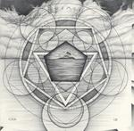

| Artist: | Witsend |
| Title: | Cosmos And Chaos |
| Label: | Entropy Records 927608 |
| Length(s): | 47 minutes |
| Year(s) of release: | 1993 |
| Month of review: | [12/2003] |
| 1) | Voyager | 5.26 |
| 2) | Circadian Rhythm | 3.39 |
| 3) | Tautology | 3.55 |
| 4) | Etude No. 1 | 2.25 |
| 5) | Strange Loop II | 6.24 |
| 6) | Cosmos | 1.19 |
| 7) | Poetry in B Minor | 1.17 |
| 8) | Mount Ethereal | 7.39 |
| 9) | Etude #2 | 4.12 |
| 10) | The Tone Row | 2.18 |
| 11) | Closure | 7.14 |
| 12) | Chaos | 1.48 |
Circadian Rhythm on the other hand is a vocal track, a rather bouncy one in fact, where the dominating factors are the organ and acoustic guitar. The song has a distinctive vocal melody, and exudes a kind of singalong feel. I have the feeling that if recorded now, the song would come out better. Later, the song also includes some sharper playing and that helps.
Tautology has acoustic strumming guitar, the electric guitar staying somewhat in the back. At times there is that special Genesis feel, but at the others, the sound is very American. Again an instrumental like the follow-up Etude No. 1, which again is dominated by acoustic guitar. This time, the playing is more melodic. A friendly, peaceful tune.
Time to rock on Strange Loop II. Here the guitars rock hard as do the drums while the organs punctuate the riffs. Productionally, this sounds a bit below par, but let us not judge them too harshly, this is a home production from 1993. The song has some very nice melodic elements, and a bit of a Saga feel, mainly because of the guitar and the tunefulness.
On Cosmos, we get acoustic guitar again. There is plenty of that, especially in the many shorter tunes. One of my favourites is the classical Poetry In B Minor, a great melody there, and a bit of a Procol Harum feel.
Then we come to Mount Ethereal, also the longest track on the album. The guitar playing owes to Saga, that distinctive rhythm guitar sound. In addition, the keyboards won't keep quiet, the playing fast and marimba like. The music is more epic and less compact than Saga. More progressive one might say. Plenty of instrumental bombast too. In fact, the only track so far which included vocals was the second one. Cosmos includes a moodier intermezzo, after which the song fires up again. The sound is a bit sharp to the ears here.
Etude #2 is back to the acoustic guitar, this time in classical guitar fashion. Think of the acoustic Hackett albums here. On The Tone Row, hammered piano is the dominating factor, a rather fast and frolic track. Surprisingly, heavy guitars set in as well, for some ethereal effect rich playing. But the music continues to be quite jolly in a way. Strange.
Closure is one of the longer tracks opening with harpsichordish keyboards. There is something quite menacing about this opening. Until we come into the more bombastic guitar dominated solo part, which kind of combines the old with the new Yes, adding some classical pomp. Chaos is the short closer, a bit vague with acoustic guitar and fast drumming and some organ playing through, parts taken from the previous songs.